Há 30 anos, a comunicação da sua empresa passa por aqui.
Centrais telefônicas, infraestrutura de rede e software em Porto Alegre, Brasil e América Latina, desde 1996.
Plantão técnico 24 horas, 7 dias por semana.
Racks organizados e identificados, suporte remoto e atendimento presencial.
Cada ponto conectado, identificado e funcionando.
Fale com um especialistaDesde 1996, cuidando da central que não pode parar.
A PHSUL nasceu integrada à plataforma Philips, com o padrão de confiabilidade que fez a fama da linha Sopho. Trinta anos depois, atendemos de pontos de venda de construtoras e imobiliárias a hotéis, multinacionais e órgãos públicos, com telefonia, redes e segurança eletrônica no mesmo contrato.
- Plantão técnico 24/7 para incidentes críticos, com resposta rápida.
- Suporte remoto e presencial, feito pela nossa própria equipe técnica.
- Venda e locação de centrais, telefones, racks, switches e servidores.
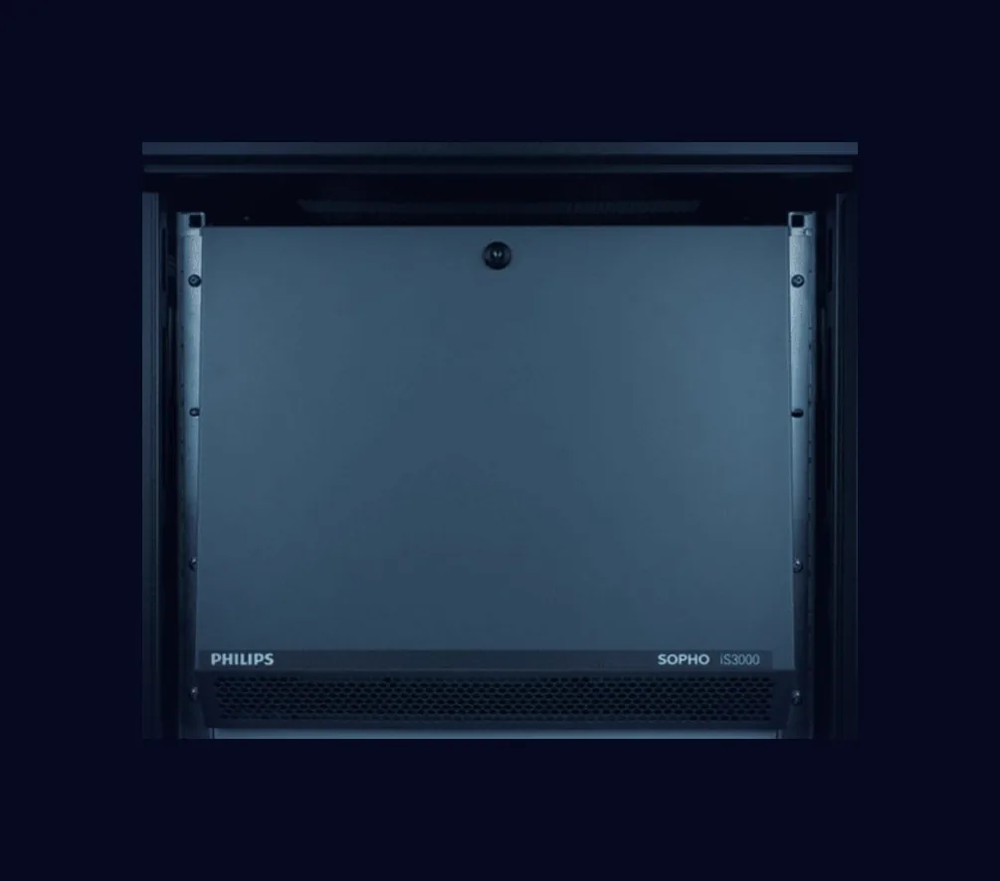
“Nossa central tem mais de quinze anos e nunca ficou fora do ar. Quando algo acontece de madrugada, alguém da PHSUL atende.”
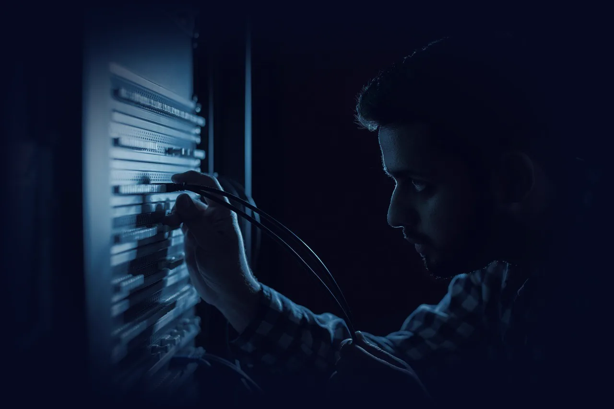
Da central telefônica ao último ponto de rede.
Manutenção e suporte de PABX
Manutenção preventiva e corretiva, diagnóstico de placas de ramal e tronco, configuração de troncos SIP e reprogramação de URAs, filas e grupos de busca. Somos especialistas em Grandstream, Leucotron, Alcatel-Lucent, Ericsson-LG, NEC e Philips.
Solicitar atendimento técnico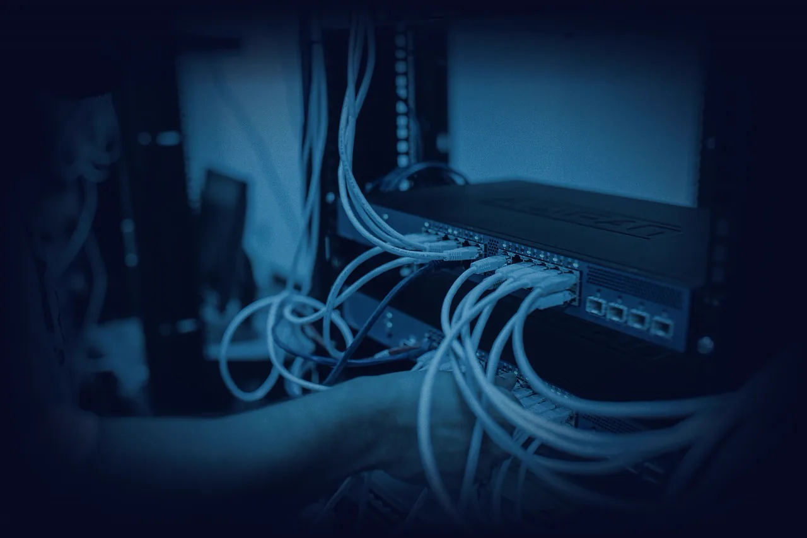
Infraestrutura de redes e cabeamento estruturado
Projetos normatizados em CAT5e, CAT6, CAT6a e fibra óptica, com certificação de cada ponto. Instalamos racks, switches, servidores e antenas, tudo organizado e identificado, para que a próxima manutenção leve minutos e não horas.
Pedir um diagnóstico da rede“Refizeram o cabeamento do prédio inteiro em um fim de semana. Na segunda-feira a operação abriu normalmente, com cada ponto identificado no rack.”
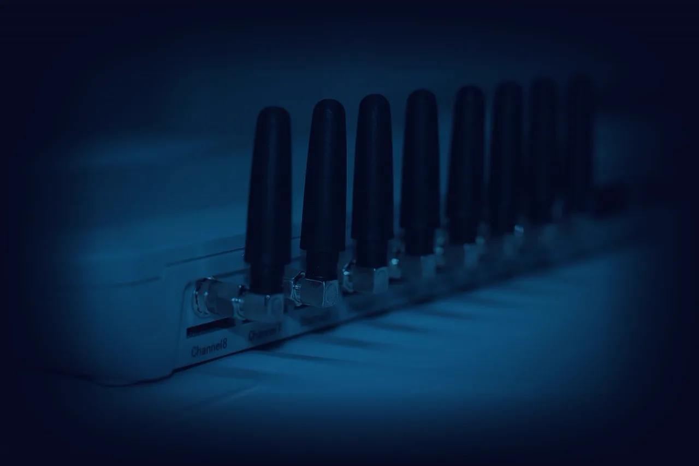
Wi-Fi corporativo e gestão de conectividade
Projeto de cobertura sem pontos cegos, das salas de reunião aos depósitos. Rede de visitantes separada da rede interna, controle de banda por usuário e roaming entre access points, para ninguém perder a chamada ao trocar de sala.
Planejar a cobertura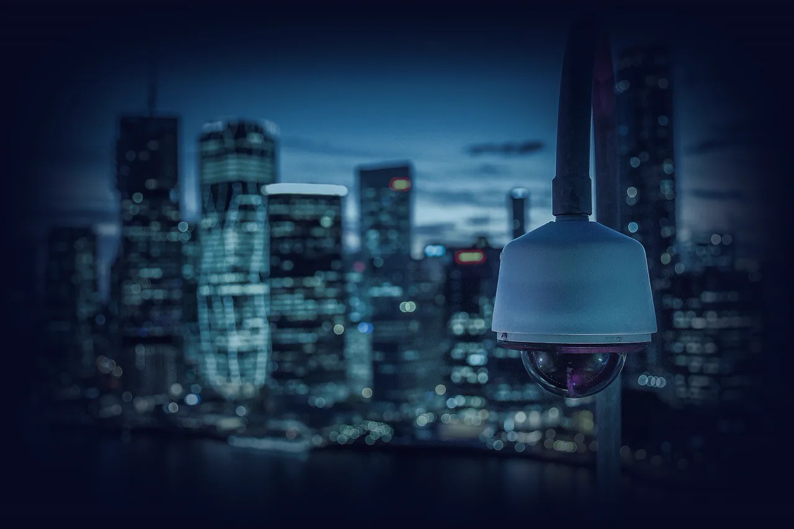
Controle de acesso e segurança eletrônica (CFTV)
Câmeras IP Full HD e 4K com acesso remoto, detecção de movimento, cercas virtuais e alertas automáticos. Leitores de crachá RFID, teclados, trancas eletroímã e registro de cada entrada e saída, com gravação local ou em nuvem.
Avaliar a segurança do localGerenciamento e redução de custos
Auditoria das contas de telefonia fixa e móvel, contestação de cobranças indevidas, tarifação por centro de custo e portabilidade numérica sem interrupção. Somos parceiros do cliente, não das operadoras: nossos clientes alcançam até 30% de economia média no primeiro semestre.
Auditar minhas contasTelefonia corporativa, para venda ou locação.
- PABX em nuvem
- Central como serviço, sem servidor local, integrada ao Microsoft Teams, com URA por reconhecimento de voz e gravação em conformidade com a LGPD.
- IP PABX e centrais híbridas
- Grandstream UCM, Leucotron Ision IP, Alcatel-Lucent OXO, Philips Sopho iS3000, NEC SV8100 e SL1000, Ericsson-LG.
- Telefones e terminais
- Telefones IP com e sem fio, aparelhos digitais e telefones executivos.
- Videoconferência e headsets
- Kandao para salas de reunião; headsets TOPUse e Plantronics para quem passa o dia ao telefone.
- Call center e tarifador
- Posições de atendimento sob demanda, discador, pesquisa de satisfação e relatórios de SLA, TME e TMA.
“Levamos o PABX para a nuvem e integramos ao Teams. Os corretores atendem o número da imobiliária de qualquer plantão.”
Trabalhamos com os fabricantes que você já conhece.
Grandstream · Leucotron · Alcatel-Lucent · Ericsson-LG · NEC · Philips · Cisco · Intelbras · Khomp · Furukawa · Poly · TOPUse · Pináculo · Direction Systems · Delta Cable · Cigame
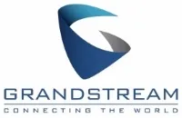
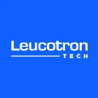
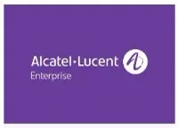
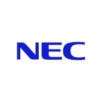
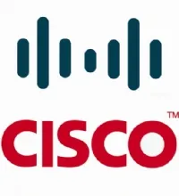
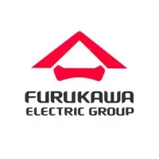
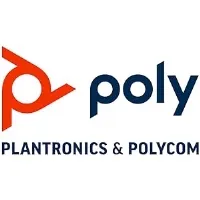
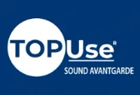
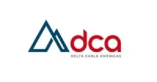
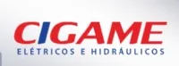
“Temos centrais de três fabricantes diferentes nas nossas unidades. A PHSUL atende todas, sem precisar acionar o fabricante.”
Quem atende o telefone o dia inteiro sabe a diferença.
“O Wi-Fi dos hóspedes ficou separado da rede interna, e as reclamações na recepção acabaram.”
“A auditoria das contas encontrou cobranças que pagávamos havia anos. O contrato se pagou no primeiro trimestre.”
“Licitação exige documentação em dia e prazo cumprido. A PHSUL entregou as duas coisas, e o suporte continua igual.”